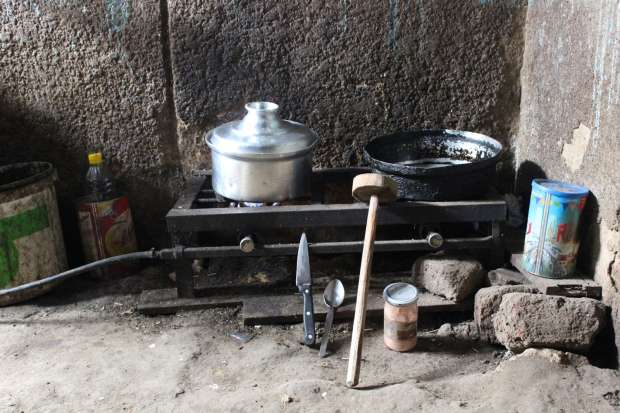
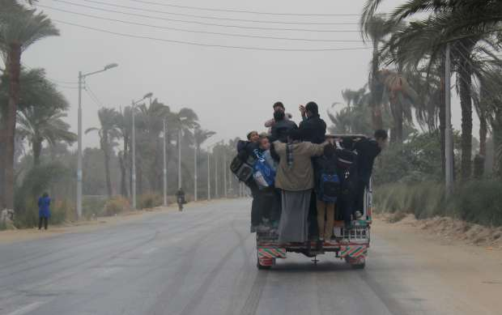
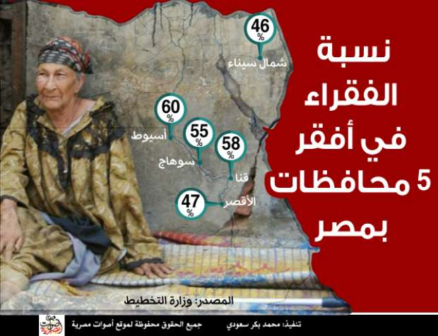

أحدث الأخبار
- القضاء الإداري يقضي بحل اتحاد الكرة وبطلان الانتخابات الأخيرة
- مقتل 3 أشخاص وإصابة 3 آخرين في حادث مروري بالبحيرة
- وزير الخارجية يجري اتصالاً مع رئيس المجلس الرئاسي الليبي
- عاصمة مصر تتجه لزيادة سكانية نصف مليون العام الجاري
- باولو يقود هجوم الزمالك أمام رينجرز في دوري الأبطال
- المالية تعفي المطاعم غير السياحية من ضريبة القيمة المضافة بشروط
- "القضاء الإداري" يلزم الجامعة الأمريكية بتحصيل مصروفاتها بالجنيه المصري
- البورصة ترتفع بنسبة 0.52% في نهاية التعاملات
رمضان في بيوت فقراء الصعيد.. كِشك وبصارة ولحمة بالتقسيط

طفل داخل مسكنه في قرية الشامية بأسيوط- تصوير: أحمد حامد
أم أشرف: يوم مكرونة بالصلصة ويوم صينية بطاطس ويوم فول.. وأهي بتتقضى
احتفظت أم أشرف، بنصف دجاجة كانت قد اشترتها من فترة في الثلاجة، حتى تستطيع أن تستقبل أول أيام رمضان ولديها ما يمكن أن تطهوه لابنها.
"كان عندنا فرخة عملت نصها من فترة، وسبت النص التاني علشان أعمله أول يوم رمضان"، كما تقول أم أشرف، لأصوات مصرية.
أم أشرف عاملة باليومية في محطة القطار بمركز مطاي بمحافظة المنيا، وتسكن مع ولدها، وهو من ذوي الاحتياجات الخاصة، في شقه بالإيجار.
لم تقم أم أشرف، التي تفضل استخدام هذا اللقب المرتبط بابنها، بأي استعدادات خاصة لشهر رمضان "لا بجيب ولا بخزن، وماشية يوم بيوم على قدي وعلى قد فلوسي" كما تشرح.
ووفقا لبيانات خريطة الفقر التي أعلن عنها الصندوق الاجتماعي للتنمية في عام 2014 فإن نسبة الفقر في مصر تتركز بشكل أكبر في محافظات الصعيد.
فمن أصل 10 محافظات هي الأفقر في مصر، تنتمي 9 منها للوجه القبلي، وفقا لبيانات الخريطة.
تحصل أم أشرف على 18 جنيها يومية من عملها، و"لو غبت يوم بيخصموا يومين".
كما يحصل ابنها على معاش ضمان اجتماعي يقدر بنحو 320 جنيها، وتقول عنه "بحاول أكله بيهم وأجيبله علاج. ده أنا حتى مش ممشياه على العلاج بالضبط علشان الأدوية غليت".
تستعين أم أشرف بحصتها التموينية لتوفير بعض نفقاتها وتقول "باخد كيلو رز وكيلو سكر وقزازة زيت، وباقي نقط العيش بجيب بيها سلع تانية".
قبل رمضان بأيام قليلة ذهبت أم أشرف لشراء كيلو أرز فوجدته بنحو 6 جنيهات "وقفت أفاصل مع البياع وأقوله بخمسة قالي لأ، وفي الآخر اشتريت علشان خاطر ألاقي حاجة ياكلها لابني"، كما تقول.
في رمضان لا تملك أم أشرف اختيارات كثيرة لتنويع إفطارها وتقول "يوم مكرونة بالصلصة، ويوم صينية بطاطس، ويوم فول بالصلصة، وأهي بتتقضى".
وتضيف وهي تضحك "طبعا كل ده من غير لحمة، أصلي مقدرش عليها ده الكيلو بحوالي 80 جنيه، عند الجزار ويا دوب كام حته".

موقد للطعام بمنزل أحد الأسر الفقيرة بأسيوط - تصوير: أحمد حامد
الكِشك بدلا من اللحوم
لكن إنعام غريب، بائعة للفطير بأسيوط، تتحايل على ارتفاع أسعار اللحم البلدي باللجوء للمستورد وتقول "اللحمة البلدي والفراخ غاليين خالص. ساعات في ناس بتدبح وتوزع لله، ودي الحالة الوحيدة إللي نقدر ناكل فيها لحمة بلدي".
استقبلت إنعام شهر رمضان دون أموال تكفي احتياجات أسرتها المكونة من 6 أولاد وزوج عاجز عن العمل، "مش معايا فلوس بس ربنا بيفرجها، وأهو أنا بمشي طقة بطقة"، كما تضيف.
تتحايل إنعام على الفقر بطهي أصناف غير مكلفة من الطعام في رمضان، وتقول "بنعمل يوم عدس ويوم بصارة أو سلطة، وساعات نبل كشك صعيدي أو جبنة رايبة".
وتعتبر محافظة أسيوط التي تسكن بها إنعام، أكثر المحافظات المصرية فقرا، وفقا لخريطة الفقر.
يأتي رمضان هذا العام في ظل ارتفاع كبير لدرجات الحرارة، فتلجأ إنعام وأسرتها إلى شراء أكياس من العصير بثمن 50 قرشا وتقول "بنشتري كيس عصير ندوبه ونشربه أنا والعيال أهو يروي العطش".
مرة عدس ومرة بصارة أو سلطة.. وساعات نبل كشك صعيدي
تعاني إنعام من كساد في عملها خلال شهر رمضان "بلف على الزباين يقولوا مش عايزين فطير، تعالي بعد العيد والحالة بتبقى صعبة جدا لأن مفيش دخل".
وتعتمد السيدة الأسيوطية في رمضان على بعض التبرعات التي تحصل عليها، وتقول "بنتسند على حد يبعت لنا كيس مكرونة ولا كيس رز ونمشي حالنا".
تقدمت إنعام بأوراقها للحصول على معاش الدعم النقدي المشروط، الذي يمنح للأسر الفقيرة ذات الأطفال، بشرط استمرار وانتظام أطفالها في المدارس.
وبدأت وزارة التضامن الاجتماعي صرف معاش الدعم النقدي في يونيو الماضي بمحافظتي أسيوط وسوهاج أولا نظرا لارتفاع نسبة الفقر بهما، ثم بدأ الصرف في بقية محافظات الصعيد.
وتقول إنعام "قدمت لكن اسمي منزلش لحد دلوقتي. مش عارفة هكمل شهر رمضان إزاي. بقيت أروح اشتغل في البيوت علشان أجيب قرش لعيالي".

أطفال يركبون سيارة في طريق عودتهم من المدرسة بأسيوط - تصوير: أحمد حامد
بدون خيار
مع قدوم رمضان، استغنى شحاتة عيد، مزارع من قرية الميمون بمحافظة بني سويف، عن خضروات مثل الخيار، لأنه لا يستطيع شراء كيلو الخيار بعد أن وصل سعره لنحو 6 جنيهات.
"كنا بنعمل سلطة على طول في رمضان، لكن السنة بنحط جرجير ولا بقدونس بدال الخيار"، كما يقول شحاتة، الذي لديه أسرة مكونة من زوجة وبنت وولد وتنتظر قدوم مولودين جديدين.
وتحتل محافظة بني سويف، التي يسكن بها شحاتة، المركز الخامس ضمن أفقر عشر محافظات في مصر، بحسب خريطة الفقر.
يعمل شحاتة مزارعا بيومية تبلغ نحو 50 جنيها، "مش بتكفي المصاريف، لكن إحنا بنخليها تكفي غصب عنها".
بجيب كيلو لحمة بالتقسيط مرة في الأسبوع.. وكل يوم أدفع جزء من تمنه
يشرح شحاتة كيف يتحايل على قلة دخله في رمضان ويقول "بنطبخ يوم الخميس بس، أروح أشتري كيلو لحمة من الجزار وأديله 10 ولا 15 جنيه وبقية الأسبوع كل يوم أديله حاجة من بقية فلوسه".
يشتري شحاتة اللحم البلدي بالتقسيط بسعر 85 جنيها للكيلو، لكنه لا يستطيع شراء اللحم المستورد رغم أن سعره لا يتجاوز 50 جنيها "بتاع المستورد عايز فلوسه على طول، مش زي الجزار بيصبر علينا شوية"، كما يوضح.
ورغم ارتفاع أسعار اللحوم إلا أن شحاتة يفضل شراءها بدلا من الدجاج، "كيلو الفراخ ما بين 28 و 29 جنيه، وأقل فرخة هتكون 2 كيلو يعني هدفع يجي 60 جنيه، يبقى اللحمة أحسن".
تقضي أسرة شحاتة، بقية أيام الأسبوع ما بين وجبات العدس والفول والبطاطس "السنة دي الأسعار إللي شفناها في رمضان ما شفناهاش طول حياتنا، والأسعار مش معقولة علشان كده بنقضيها عدس وفول وبطاطس".
وقفز معدل التضخم على أساس سنوي خلال شهر مايو إلى 12.9% مقارنة بنحو 10.9% في شهر أبريل، فيما سجل التضخم الشهري ارتفاعا بنسبة 3.2%، وفقا لبيانات الجهاز المركزي للتعبئة العامة والإحصاء، التي أعلنها يوم الخميس الماضي.
يقول شحاتة "في بداية رمضان مش بنشتري حاجة خالص، بنستنى واحد يجيب لنا شنطة رمضان ولا حد يبعت لنا 3 كيلو رز، علشان نمشي حالنا".
يسكن شحاتة في بيت صغير مكون من غرفتين وصالة، ويشكو من ضيق المكان "المطرح صغير، لا بعرف أربي طيور ولا غيره"، كما يشرح.
يعمل شحاته في رمضان منذ الفجر وحتى الساعات الأولى من الصباح "الشغل بيبقى قليل جدا في رمضان علشان كده بشتغل الصبح".
يحاول شحاتة أن يقلل نفقاته خلال شهر رمضان قدر المستطاع ويقول "بنتي داخلة المدرسة السنة دي، وبيقولوا لازم أدفع لها 300 جنيه، فبحاول أحوش لها علشان ما اتزنقش".

إنفوجراف لنسبة الفقراء في أفقر 5 محافظات في مصر- أصوات مصرية
الاخبار المتعلقة


تعليقات الفيسبوك